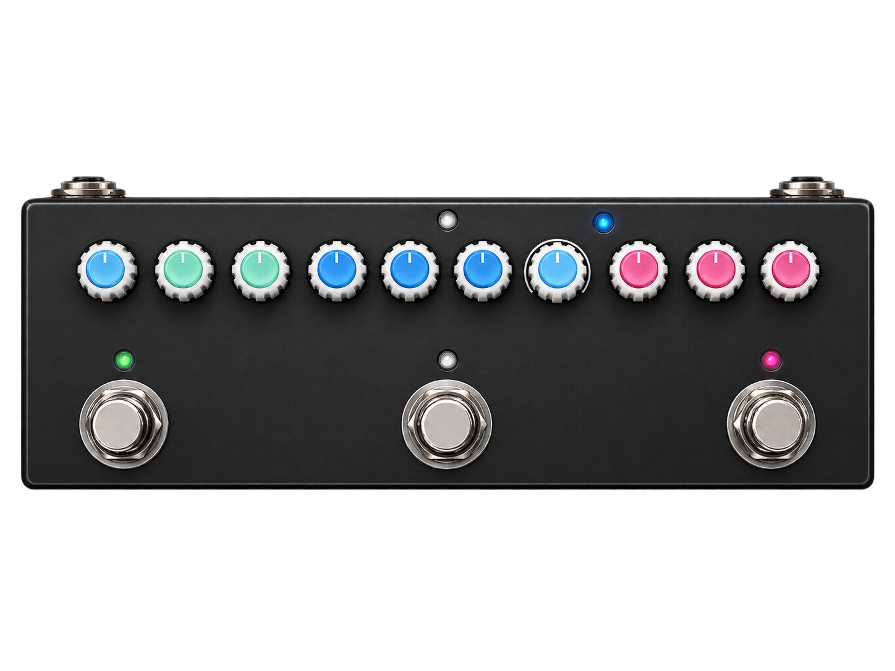

Manual do usuário / 1.1.0
Entenda o controle.
Encontre seu som.
Do primeiro cabo USB ao ajuste fino de um efeito. Um guia para editar, ouvir e guardar seus timbres no cubeControl.

Explore o manual
01Primeiros passosInstalação, conexão USB e primeiro timbre.02Pedaleira e efeitosSeleção de módulos, switches e controles de timbre.03Presets, gravação e arquivosA/B/C, edição ao vivo, banco JSON e desfazer.04IRs, gabinetes e associaçõesBiblioteca, slots, prévia e associação com amps.05Criador de ampsModelos BIN, prévia em RAM e gravação em slot.06Usar os criadores de efeitosGestos, arquivos locais e limites das prévias.07Criador de chorusPreparação, controles e recuperação da prévia de chorus.08Criador de phaserPreparação, controles e recuperação da prévia de phaser.09Criador de delayPreparação, controles e recuperação da prévia de delay.10Criador de reverbPreparação, controles e recuperação da prévia de reverb.11Backing TracksBusca no YouTube, prévia de áudio e download MP3.12SimulaçãoConhecer a interface com um pedal virtual.13Backups e recuperaçãoGuardar arquivos e resolver prévias interrompidas.14Problemas comunsConexão, som, arquivos e documentação.15PrivacidadeDados locais, serviços externos e exclusão.
Três destinos para um ajuste
Ouvir uma mudança, guardar um arquivo e gravar no pedal são ações diferentes.
Termos que aparecem no caminho
Uma referência curta para acompanhar as instruções.
- Preset
- Conjunto de ajustes de um timbre. A/B/C identifica três destinos de edição e gravação.
- IR — resposta de impulso
- Arquivo que descreve uma resposta usada na seção de gabinete. Um WAV de IR não é uma música.
- RAM
- Memória usada durante o funcionamento. Uma prévia em RAM não substitui automaticamente um slot gravado.
- Flash
- Memória persistente do aparelho. Gravar um slot substitui seu conteúdo.
- USB-MIDI
- Canal de mensagens entre editor e pedal. A reprodução de áudio usa dispositivos de áudio do Windows.
- dBFS
- Escala digital de nível de áudio. 0 dBFS é o limite de referência; ganho em dB é outro controle.
Manuais do pedal em PDF
Documentos de referência do equipamento. Os procedimentos atuais do cubeControl estão nos capítulos acima.
- Manual oficial do Cube Baby · en-US en-US · PDF
- Manual adaptado do Cube Baby · en-US en-US · PDF
- Manual adaptado do Cube Baby · pt-BR pt-BR · PDF